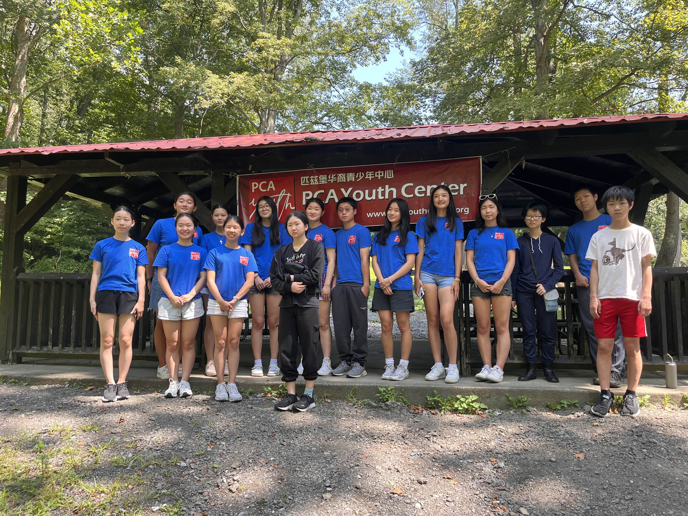

Student Council
Student Council relies on everyone, and you can contact any member with questions.

Advisory Board
Ava Liu
Advisor. Ava Liu joined PCA Youth Center Student Council in 2021. She likes listening to music, sleeping in, questioning reality, and reading.
Shirley Deng
Advisor. Shirley Deng joined PCA Youth Center Student Council in 2022. She likes to dance, bake, and play the violin and piano.
Position Members
Angelina Li
President. Angelina is president of PCA Youth Center Student Council. She enjoys swimming, reading, and hanging out with friends.
Zoey Guo
President. Hi, I'm Zoey. I joined PCA in 2021. I play tennis and viola. In my free time, I enjoy reading, painting, biking, and cooking.
Joanna Bi
Vice President. Joanna Bi is the vice president of PCA Youth Center Student Council. She enjoys playing viola, baking, and hanging out with friends.
Lynsey Zhao
Vice President. Lynsey Zhao is the vice president of the PCA Youth Center Student Council. She enjoys rhythmic gymnastics, art, and reading.
Elena Xiao
PR Director. Elena Xiao joined PCA Youth Center Student Council in 2025. She loves traveling, visiting art museums, and reading.
Joy Zhang
Secretary. Joy Zhang joined PCA Youth Center Student Council in 2024. She likes listening to audiobooks, crocheting, and trying new foods.
Casey Yang
Webmaster. Casey Yang joined PCA Youth Center Student Council in 2023. She enjoys reading and petting her two cats.
2025-2026 Council Members
Interested?
Apply today. PCA welcomes anyone from any background and looks forward to seeing new faces.
A Note from the Council
The PCA Youth Center Student Council is made up of student volunteers who come together under the same mission and drive: to promote love and care for the community by creating and supporting hands-on learning opportunities for the youth demographic and upcoming generation. Here at PCA, you explore ideas, encourage collaboration, inspire leadership, and connect with the community.
Our Student Council is dedicated to creating fun and educational events for our youth community. In general, we plan and host new events every two months based on public interest. Some of the past events we have held include Chinese art festivals, STEM night, career-oriented panel discussions, skill workshops such as coding or speech and debate, and an online escape room. We have also run the Pittsburgh Online YouTuber event.
In order to efficiently create events that run smoothly while maintaining our social media and website, our student council is divided into sub-committees: general managers, public relations, webmasters/bloggers, and event planners. These groups meet separately but come together as a whole at our weekly council meeting. Each member is essential to the overall council and is responsible for their own part.
Our members develop leadership skills and learn how to collaborate and exchange ideas, allowing them to broaden and expand their network with each other and the community. In addition, members get at least 40 hours of volunteer work every year.
We also provide volunteer opportunities for those not in our council. In the past, we have organized small groups of volunteers from our PCA volunteer pool to help at Jubilee Kitchen and the Ronald McDonald House of Charity. For general events, these volunteers may also be asked to help with proctoring, setup, and tear down.
Best,
The PCA Youth Center Student Council